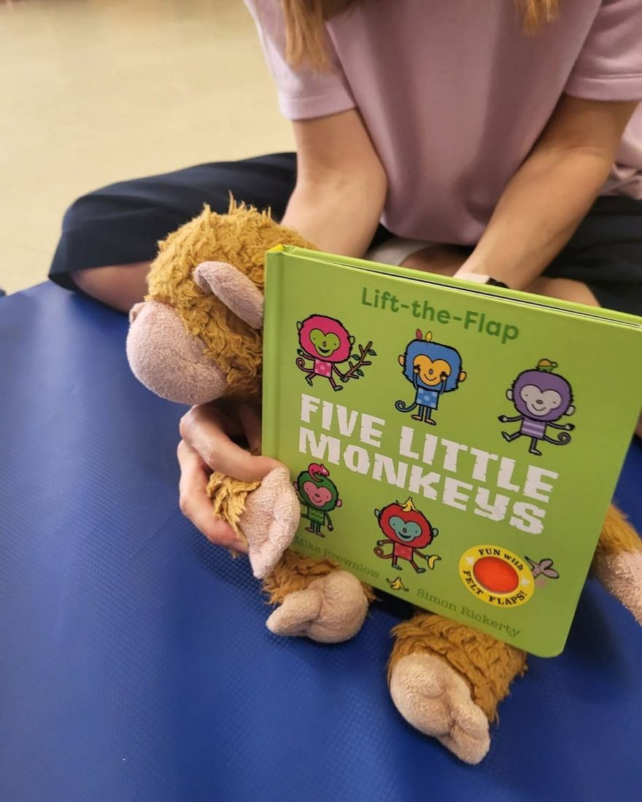

1–3 anni
Nido integrato «Le Gemme» e Sezione Primavera
Il nido sta dentro la scuola dell'infanzia, per questo si chiama integrato. I piccolissimi hanno spazi tutti loro, e intanto fanno attività insieme ai bambini più grandi: a tre anni il passaggio è naturale.
- Sezioni organizzate per angoli: morbido, senso-motorio, della manipolazione, della comunicazione
- Inglese, musica, lettura e psicomotricità per i bimbi grandi
- Pediatra del servizio, colloqui individuali e incontri con lo psicopedagogista
- Pranzo preparato nella cucina della scuola